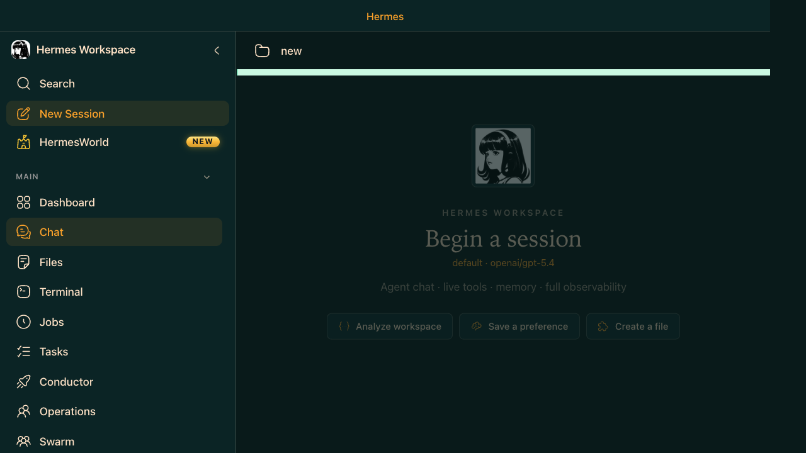

Section 05
🖥️ Layer 3 · Hermes Workspace
Workspace Chat — The Default Starting Point
Workspace Dashboard is the operational front door. If the Dashboard is the live command center for sessions, spend, status, and attention items, then Workspace Chat is the conversation layer where you issue prompts, approve actions, and steer the agent. The Dashboard is one of the clearest feature differences between Hermes Workspace and Hermes Agent.
ELI10
Workspace Chat looks like any AI chat — but it's wired to a real persistent agent. Every tool call streams as a live card you can approve or abort. You can switch models mid-thread. Every session is saved and resumable. The Agent View sidebar shows a live queue of what's happening.
⚡ Hermes Agent — What's different from plain Copilot Chat
- Persistent sessions — every conversation saved, resumable from Dashboard or CLI (
hermes --continue) - Cross-session memory — FTS5-indexed facts from all past sessions injected automatically
- Skill lookup — agent searches 2,000+ skill library before answering; relevant procedures auto-loaded
- Real tool execution —
execute_code,bash,web_search,browseractually run; not simulated - Multi-platform — same session continues on Telegram, Slack, or any connected platform
🖥️ Hermes Workspace — Chat UI features
- Model switcher — swap between Claude, GPT, Gemini, Codex, Ollama mid-conversation
- Live tool cards — each tool call streams in real time; approve or abort before it executes
- Agent View panel — right sidebar: avatar, active task queue, history, token usage meter
- SSE streaming — real-time output with markdown + syntax highlighting
- Session list — left panel lists all conversations; click any to resume
- HermesWorld — the playable demo environment (bottom of nav)

Hermes Workspace · Chat page · Left nav, session list, Agent View sidebar
Just Show Me — First Workspace Chat
You — paste into Workspace chat
Do this
Use this prompt in the appropriate chat, terminal, or field.
Paste into chat
What can you do right now? Show me your active tools, how many skills you have loaded, and a one-sentence summary of what you remember about me.
Hermes Agent — sample response
Active tools: execute_code, bash, read_file, write_file
web_search, browser, image_gen, tts (via Nous Portal Tool Gateway)
Skills loaded: 2,347 indexed | 12 recently used
Top: python-debug, git-workflow, api-design
Memory summary: You prefer Python, work on a Jira/Confluence reporting
project, and like concise bullet-point responses.
Model: gpt-5.4 · Provider: copilot · Backend: Enhanced
You
Do this
Use this prompt in the appropriate chat, terminal, or field.
Paste into chat
Read the files in my current workspace. Summarize the project purpose, identify the main entry point, and list any TODO comments you find. Don't make any changes yet.
You
Do this
Use this prompt in the appropriate chat, terminal, or field.
Paste into chat
Analyze my last 10 sessions. Identify: (1) which tasks took the most turns, (2) patterns in what I ask for most often, (3) tools I use most. Then suggest 3 skills I should install to make my workflow more efficient.
⚡Interrupt mid-stream: Type a new message while the agent is running and press Enter — it interrupts the current task and switches to your new instruction.
⚡/model in chat switches models instantly — but only among providers you've already configured. Use
hermes model in terminal to add new providers.⚡The Agent View panel (right sidebar) shows real token usage per message — useful for knowing when you're approaching context limits.